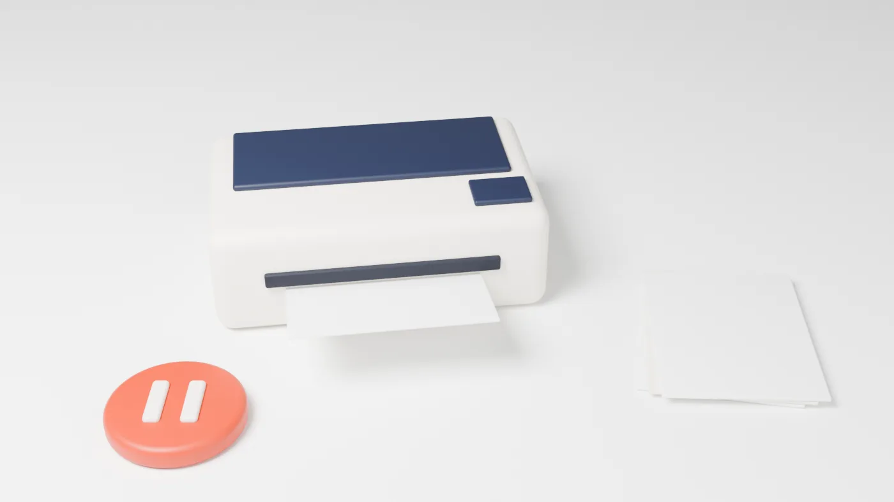

“Printer offline” in Windows 11 means the computer cannot currently reach the printer, or has been told to treat it as offline. It rarely means the printer is broken.
Before removing and reinstalling anything, find out whether one computer or the whole office is affected. That single answer points to the right fix.
Check scope first
Ask a coworker to print a test page to the same printer. If nobody can print, the problem is the printer or the network. If only one computer is affected, the problem is that computer’s printer setup, queue or connection.
Look at the printer’s own display. Clear any error, paper jam or empty tray, and note its network status. Many office printers can print a configuration page that shows their current IP address; keep that page handy for the next steps.
Restart in the right order
Microsoft’s offline-printer guide suggests running the printer troubleshooter in the Get Help app first, then turning the printer off and unplugging it for about 30 seconds before turning it back on. Wait until the printer finishes starting up before trying again. Troubleshooting offline printer problems in Windows
For a network printer, confirm it is on the same network as the computer. A laptop on guest Wi-Fi, or a printer that fell back to its own setup network, will show as offline even though both devices look fine.
Clear the offline setting and the queue
In Windows 11, open Settings, then Bluetooth & devices, then Printers & scanners, select the printer and open the print queue. Make sure Pause printing and Use printer offline are not selected. Cancel any stuck jobs, since one bad job can block everything behind it. Troubleshooting offline printer problems in Windows
If jobs will not clear, restart the Print Spooler service from the Services app, as Microsoft describes in its spooler troubleshooting article. Then print a test page. Fix print spooler service not running errors in Windows
Look at the printer’s network address
A common office cause is an address change. If the printer received a new IP address from the router after a power outage or router replacement, computers that were set up with the old address keep looking in the wrong place and report the printer as offline.
Compare the IP address on the configuration page with the one in the computer’s printer port settings. The lasting fix is a reserved or fixed address for every shared printer, set by whoever manages the router, so the address does not move again.
Remove and re-add as the last step
If the printer is reachable and the queue is clear but it still shows offline, remove it from Printers & scanners and add it back with Add device, using the manufacturer’s current driver where needed. Do this on one computer first and confirm it works before repeating it across the office.
Odyssey supports Greater Houston offices with business IT support, including printer and network setup. Contact Odyssey with the printer model, its IP address and whether one or all computers are affected.
Sources
Related guides

Print Job Stuck in the Queue? A Safe Office Troubleshooting Checklist
Learn More